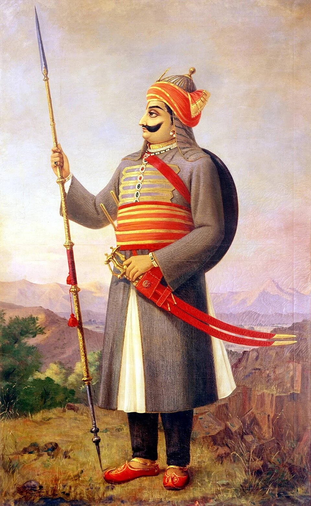

Maharana Pratap was one of the most famous and respected rulers in Indian history. He is remembered for his bravery, patriotism, self-respect, and determination to protect his motherland. He was born on 9 May 1540 at Kumbhalgarh Fort in Rajasthan. His father was Maharana Udai Singh II, the ruler of Mewar, and his mother was Jaiwanta Bai. Maharana Pratap belonged to the Sisodia Rajput dynasty and became the ruler of Mewar in 1572. From an early age, he learned the importance of courage, discipline, leadership, and responsibility. He grew up in a royal family and developed a strong connection with his people and his kingdom. Maharana Pratap ruled Mewar during a period when the Mughal Empire, under Emperor Akbar, was expanding its power across India. Akbar wanted to bring the Rajput kingdoms under Mughal authority. Several Rajput rulers accepted Mughal rule, but Maharana Pratap chose to resist Mughal control and protect the independence of Mewar. He believed that the freedom and dignity of his kingdom were more important than personal comfort or royal privileges. His refusal to surrender made him one of the most significant figures in the history of Rajput resistance. His struggle was not easy because the Mughal Empire had greater military resources, but he continued to defend his kingdom with determination and courage. One of the most important events in Maharana Pratap's life was the Battle of Haldighati, fought on 18 June 1576. The battle took place near Haldighati, a mountain pass in present-day Rajasthan. Maharana Pratap led his forces against the Mughal army commanded by Man Singh I of Amber. The battle was fierce, and both sides faced difficult conditions. Although the battle did not result in a decisive victory for Maharana Pratap, he escaped and continued his resistance against Mughal power. The Battle of Haldighati became an important symbol of his courage and determination. Rather than accepting defeat as the end of his struggle, he reorganized his forces and continued working to regain control of his territory. Maharana Pratap's horse, Chetak, is also an important part of the stories associated with his life. Chetak is remembered for its speed, loyalty, and bravery during the Battle of Haldighati. According to popular accounts, the horse helped Maharana Pratap escape from danger despite being seriously injured. The story of Chetak has been passed down through generations and has become a symbol of loyalty between humans and animals. The relationship between Maharana Pratap and Chetak remains one of the most memorable elements of Rajasthan's historical traditions and cultural heritage. After the Battle of Haldighati, Maharana Pratap faced many hardships. He had to deal with limited resources, military pressure, and difficult living conditions. Despite these challenges, he continued his struggle with the support of loyal warriors and local communities, including the Bhil people, who helped him resist his enemies. Maharana Pratap gradually strengthened his position and recovered control of many areas of Mewar. His continued resistance demonstrated his ability to adapt his military strategy and remain committed to his goal. His struggle was not limited to a single battle; it continued over many years. Maharana Pratap is admired not only for his military efforts but also for the values associated with his life. He is remembered for his courage, independence, self-respect, and willingness to face hardship rather than surrender his principles. His story teaches us that success is not always measured by winning a single battle. Sometimes, determination means continuing to work toward a goal even when circumstances are unfavorable. His life also highlights the importance of leadership, loyalty, sacrifice, and responsibility toward one's people. Maharana Pratap died on 19 January 1597 at Chavand, which served as his capital during the later part of his reign. His son, Amar Singh I, succeeded him as ruler of Mewar. Although Maharana Pratap did not live to see the complete restoration of Mewar's former political position, his efforts helped preserve a significant degree of independence in the region. Over time, he became a symbol of resistance, particularly in Rajasthan, where his memory is honored through monuments, historical accounts, literature, and cultural traditions. In conclusion, Maharana Pratap was a remarkable ruler whose life continues to inspire generations of Indians. His determination to defend Mewar, his courage in the face of powerful enemies, and his commitment to personal dignity have made him an enduring figure in Indian history. His story reminds us to remain brave during difficult times, respect our principles, and never give up easily when facing challenges. Maharana Pratap's legacy represents courage, sacrifice, patriotism, and perseverance, making him one of the most memorable warriors in the history of India.